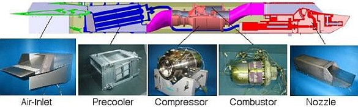
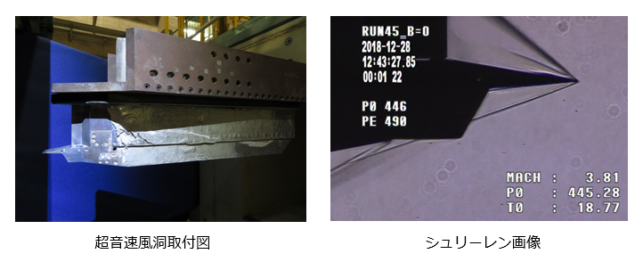
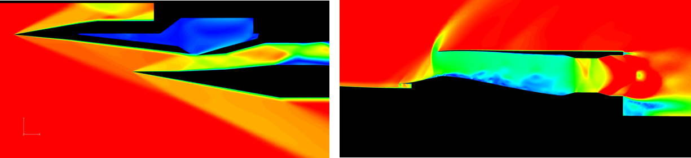
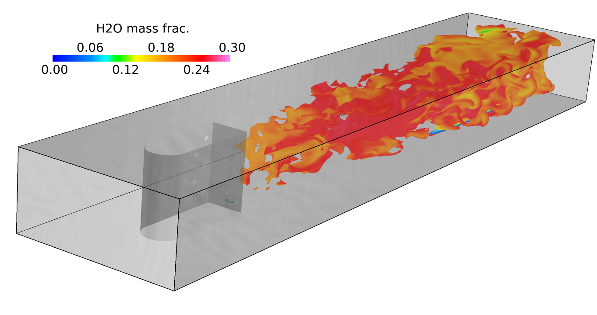
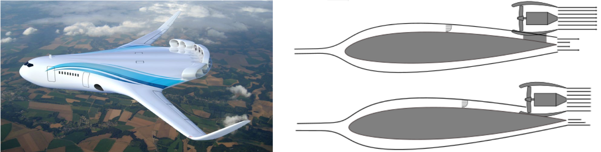
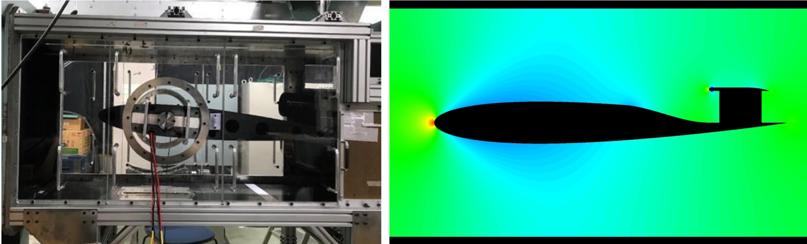
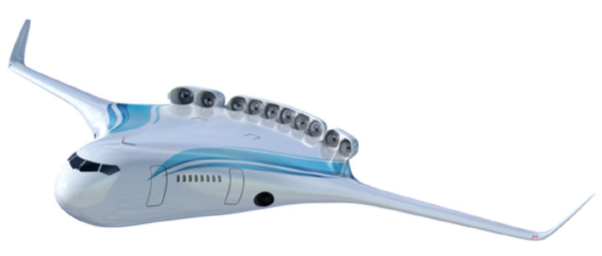

-
予冷ターボジェットエンジンとは
佐藤研究室の主な研究対象である予冷ターボジェットエンジンとは，ジェットエンジンにおけるインテークと圧縮機の間に熱交換器(予冷器)を置き、圧縮機に流入する空気をあらかじめ冷やす極超音速機用ジェットエンジンです。
高マッハ数での飛行ではインテークにおいて流入する空気の速度が減速され、運動エネルギが熱エネルギに変換されるため、インテーク後の温度が非常に高くなります(大気温度と比べてマッハ5で1000度以上高くなる)。さらに圧縮機で空気が圧縮されることで、その温度はより高くなります。
このままでは圧縮機の翼が溶けてしまうので、予冷器を設置して空気を冷やすことにより高いマッハ数でも作動可能にしようということが、このエンジンの狙いです。

予冷ターボジェット（Sエンジン） (JAXA提供)
-
極超音速予冷ターボジェットエンジンを対象とした非定常シミュレータの研究
エンジントラブル発生時に、原因究明のための有力な手法として数値シミュレーションが挙げられる。 また、エンジンの信頼性向上においても、開発設計段階で燃焼試験前にエンジンシステム全体の始動、停止、故障時などの過渡特性を把握しておくことが重要である。
そこで、本研究ではJAXAで開発中の小型予冷ターボジェットエンジンの過渡特性を解析する能力を有するシミュレータプログラムを開発することに加え、実際に運用した時の性能解析を行うことを目的とする。
-
HIMICO計画
JAXAや他大学と共同でHIMICO(High-Mach Integrated Control Experiment,極超音速統合制御実験)計画に取り組んでいます。
この計画の目的は、運用方法が確立されているS-520観測ロケットを用いて短期間かつ低コストで実現できる極超音速飛行実験手段の確立と、機体・エンジンの相互干渉を含む統合制御技術実証です。
佐藤研では実験機に搭載するラムジェットエンジンについて研究しています。
-
空気取込口(エアインテーク)
ラムジェットエンジンは圧縮機を持たず、エアインテークで流入する空気の運動量を直接圧力に変換しています。エアインエークの性能はエンジンに流入する空気流に影響し、エンジン全体の性能に関わるため、詳細な調査が必要です。
JAXA相模原キャンパスの超音速風洞を用いて毎年2週間程度の風洞試験を行い、エンジンの性能取得、バズ特性やオイルフローを用いた流れ場の調査を行っています。

-
CFDによる詳細解析
JAXAが開発した高速流体ソルバ「FaSTAR」を用いて、実験では見ることのできないエアインテーク内部の流れ場やバズ特性に関して数値解析を行っています。
HIMICO用エアインテークだけでなく、JAXAで開発が行われている様々な機体のエアインテークを対象に解析を行っています。

（左）HIMICOの数値解析結果 （右）静粛超音速機の数値解析結果 （ともにMach数分布）
予冷ターボジェットエンジンには燃料の液体水素（LH2）を用いて、流入空気を冷却する空気予冷器が搭載される。
空気予冷器を搭載することで、熱負荷の低減や中間冷却効果によるサイクル性能の向上が見込まれる。
しかし、低マッハ領域で伝熱管表面に着霜し、熱交換量の低下や流路閉塞などの問題が生じる。
そこで、予冷却班では以下の2つのテーマに取り組んでいる。
-
表面微細加工を用いた着霜低減手法の提案
空気予冷器の伝熱管表面で空気中の水分が凝結することによる着霜は、
圧力損失や流路閉塞などにつながり、大きな課題となっている。
そこで、機体重量の増加やシステムの複雑化を避けるために、
新たな機構を必要としない着霜抑制法として伝熱管表面の超撥水性に着目し、
伝熱管表面性状による着霜低減効果や伝熱効率の改善に関して研究を行っている。
-
CFDによる着霜予測
予冷却班では、強制対流下での低温表面への着霜現象を数値シミュレーションする手法の開発も行っている。
実際の飛行条件を実験で再現することは困難であり、
着霜現象を数値シミュレーションにより予測できる手法を開発することが求められる。
現在は平板上の着霜現象に関する数値シミュレーション手法の開発を行っているが
円管表面上などのさらに複雑な形状への応用を目指している。
予冷ターボジェットエンジンの燃料には液体水素（LH2）が使用されます。
液体水素は沸点がおよそ-253°C（20K）の「極低温流体」であるため、配管内で容易に沸騰し、気相と液相が共存する「気液二相状態」に遷移します。
配管内が気液二相状態になると、流量の高精度な制御が困難となることが、エンジン運用上の課題となっています。
そこで二相流班では、気液二相流現象の流動特性の把握と現象解明のため、以下の3つのテーマに取り組んでいます。
-
ボイド率計測技術の開発
気液二相流の高精度な流量制御のためには、流動特性を正確に把握する必要があります。
気液の体積割合である「ボイド率」は、流動特性を決定づける主要なパラメータであるため、その計測技術が重要となります。
そこで二相流班では、ボイド率の計測装置の開発に取り組んでいます。
開発中の「静電容量型ボイド率計」は、小型で軽量、そして堅牢なため、実験室レベルの流動特性取得実験のみならず、航空宇宙機へ実機搭載したリアルタイム計測においても活躍しうる高いポテンシャルを持っています。
また、冷凍空調機器における冷媒流のボイド率計測技術の開発も行っています。近年、次世代冷媒の導入が進められていますが、電気的特性が従来と異なることや、
複数の冷媒が混合した非共沸混合冷媒であることによって、流動状態の把握が困難となっています。
二相流班では、非共沸混合冷媒のボイド率計測といった先行例の少ないテーマを通して、次世代冷媒の性能向上を目指した研究にも取り組んでいます。
-
粒子法を用いた気液二相流の数値シミュレーション
配管内流動や燃料噴射において生じる気液二相流を数値シミュレーションする手法として粒子法を採用し、研究しています。
粒子法は流体を「動く粒子」で離散化するラグランジュ型の解法であり、国内では原子力や海岸工学を適用先として、ここ20年ほどで急速に発展してきました。
二相流班では、「燃料配管内の流動解析」と「燃焼器での燃料微粒化の挙動解析」の2つを適用先に設定しました。
そして、相変化や、格子法と組み合わせたハイブリッド解析という挑戦的テーマへの取り組みをとおして、粒子法の使用例がいまだ少ない航空宇宙分野への適用を目指した研究を行っています。
-
機械学習を用いた二相流現象の解明に関する研究
気液二相流は、液体水素を用いる航空宇宙エンジンに加え、各種発電プラントや流体機械など、多くの分野で重要な役割を持つ現象です。
それにも関わらず、時間的・空間的に複雑な変動を伴う現象であるため、その理論化が困難な現状にあります。
そこで二相流班では、従来のような理論的・演繹的アプローチではなく、データドリブンな機械学習を用いた帰納的アプローチによって、気液二相流現象の解明を試みています。
現在は「深層学習を用いた気液二相流の流動様式判別」「機械学習を用いた任意形状液滴の界面上圧力分布予測」などのテーマに取り組んでいます。
-
計算コスト削減チーム
各化学物質の輸送や反応を追い膨大な計算時間となる燃焼解析を革新するため、複雑な燃焼現象を単純な火炎の組み合わせで表す高速化手法に関する研究を行っています。本手法では様々な火炎の化学反応と流れの関係を予めデータベース化し、数値計算中に活用することで、従来よりも高速に燃焼現象を再現することができます。これらの手法を基盤に、実際の燃焼器で生じる様々な影響（圧力伝播、燃料噴霧、壁面熱損失など）を考慮する方法や、化学反応と流れのデータベースを機械学習技術（ニューラルネットワーク）により効率化する方法の確立などを目指す研究を行っています。
-
詳細解析チーム
ラム・スクラムジェットエンジンの燃焼器では、流入する空気が空力加熱によって昇温されるため、燃料を自己着火させることができます。この自己着火現象を数値シミュレーションで捉えるために、詳細な化学反応機構を考慮した反応性流体解析ソルバの開発を行っています。当研究室で研究開発を行っている極超音速統合制御実験用ラムジェットエンジンの燃焼器を対象に、開発したソルバを用いた数値シミュレーションを 行っており、実験では見ることができない燃焼器内部の燃料と空気の流れや化学反応の様子を調査しています。最終的には燃料が自己着火するかどうかを、数値シミュレーションによって判定する手法の確立を目指しています。

極超音速統合制御実験用ラム燃焼器の数値解析結果
(温度等値面、コンタはH2O質量分率)
-
研究背景
将来の航空需要の高まりから，環境負荷低減，騒音対策，燃費改善が求められています．
これを達成するための有望な候補として，境界層吸い込み（BLI; Boundary Layer Ingestion）という技術が注目されています．
BLIは機体表面に発生する境界層（抗力の原因）をエンジンに吸い込ませることで全機抵抗を低下させ，機体運航における消費エネルギーの低減が期待されています．
佐藤研究室BLI班では，BLIを採用した航空機の実現に向けた課題を抽出し，必要な基盤技術獲得を目的とした研究を進めています．
-
従来の航空機との違い
飛行中，航空機の機体表面付近を流れる空気の速さは，その他の領域に対し遅くなります（境界層）．
エンジンがこの境界層を吸い込むと，その性能が低下するため，通常はエンジンは機体から離れた位置に設置されています．
一方で、機体側の視点に立つと，境界層をエンジンに吸い込ませることで全機抵抗が低減し，エンジンの消費動力を低減できると考えられます．
BLIはエンジンに境界層を吸い込ませることで，抵抗低減，燃費改善を目指します．

Emission Free Aircraft（JAXA提供）（左） 従来式エンジン配置（右上） BLI式エンジン配置（右下）
-
研究内容
BLIの効果や，エンジンの配置位置検討のため，一般的な翼型（NACA0012）の異なる位置に電動のダクテッドファンエンジンを配置し，
エンジン消費電力と機体抗力の関係を把握するための実験データを取得しました．エンジンに流入する境界層分布や機体に加わる力等を計測しています．
また同様の形状に対し数値解析も進めています．
今後はこれまでの実験結果を踏まえ，境界層吸い込み条件に適応したファンの設計手法を構築し，設計したファンを風洞試験にフィードバックすることで，
BLI効果のさらなる向上を目指します．また，BLIの詳細解明，性能予測に向けた基礎情報を取得していきます．

機体・エンジン統合風洞実験（右） 風洞の数値解析結果（左）
-
PEFC
佐藤研究室ではJAXAと共同で燃料電池の一種であるPEFC（高分子電解質型燃料電池）の研究をしています。
燃料電池とは、水素ガスと空気を反応させて電力を得る電池のことで、発電する際に二酸化炭素などの温室効果ガスが排出されないクリーンな電池です。
電動航空機に搭載する発電機用の燃料電池を対象に性能試験を行い、低温の燃料ガスを用いても性能が落ちない燃料電池の開発を目指しています。

エミッションフリー航空機(JAXA提供)